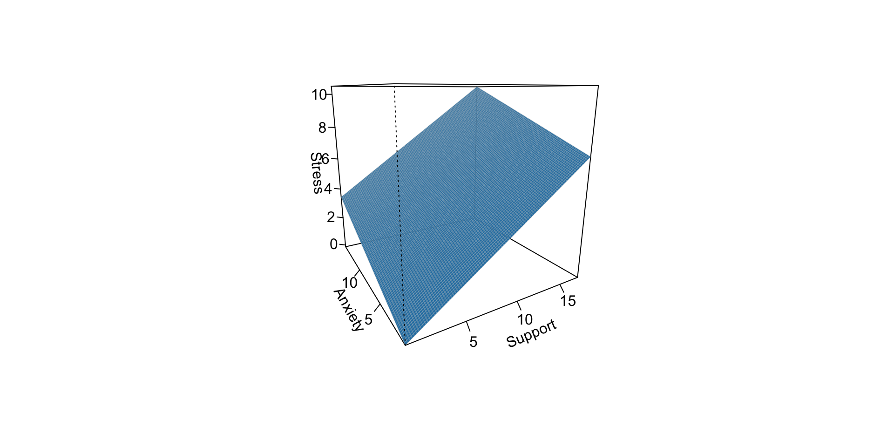

GLM basics III
Statistical Inference
The way the world is = our model + error
How good is our model? Does it “fit” the data well?
To assess how well our model fits the data, we simply take all the variability in our outcome and partition it into different categories. For now, we will partition it into two categories: the variability that is predicted by (explained by) our model, and variability that is not.
Partitioning variation
We formally test how well we are doing with our guesses by partitioning variation
To the extent that we can generate different predicted values of Y, based on the values of the predicors, we are doing well in our prediction
\[\sum (Y - \bar{Y})^2 = \sum (\hat{Y} -\bar{Y})^2 + \sum(Y - \hat{Y})^2\]
Each of these is the sum of a squared deviation from an expected value of Y. We can abbreviate the sum of squared deviations:
\[SS_{Y} = SS_{\text{Model}} + SS_{\text{Residual}}\]
\[\frac{s^2_{regression}}{s^2_y} = \frac{SS_{regression}}{SS_Y} = R^2\]
Partitioning Variance
The relative magnitude of sums of squares, especially in more complex designs, provides a way of identifying particularly large and important sources of variability. In the future, we can further partition \(SS_{\text{Model}}\) and \(SS_{\text{Residual}}\) into smaller pieces, which will help us make more specific inferences and increase statistical power, respectively.
\[\Large s^2_Y = s^2_{\hat{Y}} + s^2_{e}\]
Partitioning variance in Y
Consider the case with no correlation between X and Y
\[\Large \hat{Y} = \bar{Y} + r_{xy} \frac{s_{y}}{s_{x}}(X-\bar{X})\]
\[\Large \hat{Y} = \bar{Y}\]
To the extent that we can generate different predicted values of Y based on the values of the predictors, we are doing well in our prediction
\[\large \sum (Y - \bar{Y})^2 = \sum (\hat{Y} -\bar{Y})^2 + \sum(Y - \hat{Y})^2\]
Coefficient of Determination
\[\Large \frac{s_{Model}^2}{s_{y}^2} = \frac{SS_{Model}}{SS_{Y}} = R^2\]
\(R^2\) represents the proportion of variance in Y that is explained by the model.
\(\sqrt{R^2} = R\) is the correlation between the predicted values of Y from the model and the actual values of Y
\[\large \sqrt{R^2} = r_{Y\hat{Y}}\]
Example
Code
Call:
lm(formula = child ~ parent, data = galton.data)
Residuals:
Min 1Q Median 3Q Max
-7.8050 -1.3661 0.0487 1.6339 5.9264
Coefficients:
Estimate Std. Error t value Pr(>|t|)
(Intercept) 23.94153 2.81088 8.517 <2e-16 ***
parent 0.64629 0.04114 15.711 <2e-16 ***
---
Signif. codes: 0 '***' 0.001 '**' 0.01 '*' 0.05 '.' 0.1 ' ' 1
Residual standard error: 2.239 on 926 degrees of freedom
Multiple R-squared: 0.2105, Adjusted R-squared: 0.2096
F-statistic: 246.8 on 1 and 926 DF, p-value: < 2.2e-16[1] 0.2104629Example
Computing Sum of Squares
\[\Large \frac{SS_{Model}}{SS_{Y}} = R^2\] \[\Large SS_{Model} = R^2({SS_{Y})}\]
\[\Large SS_{Y} = SS_{Model} + SS_{residual}\]
\[\Large SS_{residual} = SS_{Y} - R^2({SS_{Y})}\]
\[\Large SS_{residual} = (1- R^2){SS_{Y}}\]
Using R To Check Yourself
\[SS_{residual} = (1- R^2){SS_{Y}}\]
r2 = summary(fit.1)$r.squared
fit.1.anova = summary(aov(fit.1))
ssTotal = fit.1.anova[[1]]$`Sum Sq`[1] + fit.1.anova[[1]]$`Sum Sq`[2]
ssResidual = (1 - r2) * ssTotal
# print things out
fit.1.anova Df Sum Sq Mean Sq F value Pr(>F)
parent 1 1237 1237 246.8 <2e-16 ***
Residuals 926 4640 5
---
Signif. codes: 0 '***' 0.001 '**' 0.01 '*' 0.05 '.' 0.1 ' ' 1[1] 4640.273???
Mean Square Error (MSE) (msw/msr)
- AKA square of residual standard error/deviation (sigma)
- Unbiased estimate of error variance
- Measure of discrepancy between the data and the model
- The MSE is the variance of data around the fitted regression line
- Just like with MSwithin, which was variance around predicted group means
- It is the mean of the square of the residuals
MSE
- It is the square of the residual standard error/deviation (sigma) aka \(RSE^2\)
Residual Standard Error
Call:
lm(formula = child ~ parent, data = galton.data)
Residuals:
Min 1Q Median 3Q Max
-7.8050 -1.3661 0.0487 1.6339 5.9264
Coefficients:
Estimate Std. Error t value Pr(>|t|)
(Intercept) 23.94153 2.81088 8.517 <2e-16 ***
parent 0.64629 0.04114 15.711 <2e-16 ***
---
Signif. codes: 0 '***' 0.001 '**' 0.01 '*' 0.05 '.' 0.1 ' ' 1
Residual standard error: 2.239 on 926 degrees of freedom
Multiple R-squared: 0.2105, Adjusted R-squared: 0.2096
F-statistic: 246.8 on 1 and 926 DF, p-value: < 2.2e-16Residual standard error/deviation
- aka standard deviation of the residual
- aka standard error of the estimate
\[\hat{\sigma} = \sqrt{\frac{SS_{\text{Residual}}}{df_{\text{Residual}}}} = s_{Y|X} = \sqrt{\frac{\Sigma(Y_i -\hat{Y_i})^2}{N-2}}\]
interpreted in original units (unlike \(R^2\))
standard deviation of Y not accounted by model
Residual standard error/deviation or standard error of the estimate
[1] 2.238547 vars n mean sd median trimmed mad min max range skew kurtosis se
X1 1 928 0 2.24 0.05 0.06 2.26 -7.81 5.93 13.73 -0.24 -0.23 0.07[1] 2.517941Because the size of \(\hat{\sigma}\) depends on both how well the model does as well as the original units of measurement, it is important to compare it to Y to evaluate!
RSE vs MSE
Residual standard error = square root of the mean square error
Both measuring error, but RSE is a little more useful
Residual Standard Error and Sigma
- So many names to represent the spread of data around the regression line
- Standard deviation of the residual, standard error of the estimate, MSE…
- We will refer to this as sigma, and use estimated sigma, as we do not know the population value ( \(\hat{\sigma}\) )
- It is interpreted in original units (unlike \(R^2\) )
- It is the standard deviation of Y not accounted by the model (i.e., residuals)
Why do we care about sigma?
- Let’s simulate!
- Data generating process:
\[Y_{i} \sim\mathcal{N}(\mu,\,\sigma)\ \]
In English: our DV for individual \(i\) is distributed normally with a mean of \(\mu\) and a standard deviation of \(\sigma\)
This describes how we think our DVs are generated, and the paramters of interest A a standard regression model assumes this, but we will see other DGPs such as binomial or poisson that do not
For normal, \(\mu\) gets all the focus but \(\sigma\) is just as important
Our plan is to fix \(\mu\) and then vary sigma to see what happens
Code
set.seed(1234)
x.1 <- rnorm(1000, 0, 1) # randomly select 1000 numbers for x
e.1 <- rnorm(1000, 0, 1) # randomly select 1000 numbers for error
y.1 <- .5 + .55 * x.1 + e.1 # create our y
d.1 <- data.frame(x.1,y.1) # combine x and y into a data.frame
m.1 <- lm(y.1 ~ x.1, data = d.1) # use x to predict y with this data
Call:
lm(formula = y.1 ~ x.1, data = d.1)
Residuals:
Min 1Q Median 3Q Max
-3.1661 -0.6439 0.0145 0.6537 3.0684
Coefficients:
Estimate Std. Error t value Pr(>|t|)
(Intercept) 0.51599 0.03100 16.64 <2e-16 ***
x.1 0.60571 0.03109 19.48 <2e-16 ***
---
Signif. codes: 0 '***' 0.001 '**' 0.01 '*' 0.05 '.' 0.1 ' ' 1
Residual standard error: 0.9801 on 998 degrees of freedom
Multiple R-squared: 0.2755, Adjusted R-squared: 0.2748
F-statistic: 379.5 on 1 and 998 DF, p-value: < 2.2e-16Again, but with a larger sigma
Call:
lm(formula = y.2 ~ x.1, data = d.2)
Residuals:
Min 1Q Median 3Q Max
-6.6267 -1.4359 -0.0192 1.4480 6.3439
Coefficients:
Estimate Std. Error t value Pr(>|t|)
(Intercept) 0.52137 0.06345 8.217 6.43e-16 ***
x.1 0.59823 0.06363 9.402 < 2e-16 ***
---
Signif. codes: 0 '***' 0.001 '**' 0.01 '*' 0.05 '.' 0.1 ' ' 1
Residual standard error: 2.006 on 998 degrees of freedom
Multiple R-squared: 0.08136, Adjusted R-squared: 0.08044
F-statistic: 88.39 on 1 and 998 DF, p-value: < 2.2e-16R2 and residual standard deviation
two sides of same coin
one in original units, the other standardized
\(R^2\) can be tricky because the numerator and denominator can be changed in different ways.
for example if variance in Y is changed but with the same regression model and residual standard error, \(R^2\) could increase or decrease
Code
set.seed(20200116)
x.1 = rnorm(1000,0,1)
e = seq(4, .01, by = -.1)
r2 = numeric(length = length(e))
rsd= numeric(length = length(e))
for(i in 1:length(e)){
e.1 <- rnorm(1000, 0, e[i])
y.1 <- .5 + .55 * x.1 + e.1
d.1 <- data.frame(x.1,y.1)
m.1 <- lm(y.1 ~ x.1, data = d.1)
r2[i] = summary(m.1)$r.squared
rsd[i] = summary(m.1)$sigma
}
data.frame(r2 = r2, rsd = rsd) %>%
ggplot(aes(x = r2, y = rsd)) +
geom_line() +
scale_x_continuous(expression(paste(R^2))) +
scale_y_continuous(expression(hat(sigma[e]))) +
theme_bw(base_size = 20)
Inferential tests
NHST is about making decisions:
- these two means are/are not different
- this correlation is/is not significantly different from 0
- the distribution of this categorical variable is/is not different between these groups
In regression, there are several inferential tests being conducted at once. The first is called the omnibus test – this is a test of whether the model fits the data.
Omnibus test
\[\Large H_{0}: \rho_{XY}^2= 0\]
\[\Large H_{0}: \rho_{XY}^2 \neq 0\]
It is possible to calculate the significance of your regression with a correlation test. In fact, it would seem quite practical and logical to do so.
However, historically we use a different probability distribution – the F distribution to estimate the significance of our model. It’s important to know that these methods are mathematically equivalent. But the F distribution is useful here, because it works with our ability to partition variance.
Model Comparisons
- So the omnibus \(F\)-statistic is the ratio of MSregression to MSresidual
- Test of overall significance. Does your model give a better fit to the data than a model that contains no independent variables?
- This is truly a question of model comparisons!
The basic idea is asking how much variance remains unexplained in our model. This “left over” variance can be contrasted with an alternative model/hypothesis. Does adding a new predictor variable help explain more variance or should we stick with the most parsimonious (simplest) model?
Every model you report implies that you are favoring that model over an alternative model, typically the null. Taking a more formal model comparison approach allows you to be more flexible, explicit, and deliberate.
Full vs. Restricted Models
fit.1 <- lm(child ~ parent, data = galton.data)
fit.0 <- lm(child ~ 1, data = galton.data)
summary(fit.0)
Call:
lm(formula = child ~ 1, data = galton.data)
Residuals:
Min 1Q Median 3Q Max
-6.3885 -1.8885 0.1115 2.1115 5.6115
Coefficients:
Estimate Std. Error t value Pr(>|t|)
(Intercept) 68.08847 0.08266 823.8 <2e-16 ***
---
Signif. codes: 0 '***' 0.001 '**' 0.01 '*' 0.05 '.' 0.1 ' ' 1
Residual standard error: 2.518 on 927 degrees of freedom
Call:
lm(formula = child ~ parent, data = galton.data)
Residuals:
Min 1Q Median 3Q Max
-7.8050 -1.3661 0.0487 1.6339 5.9264
Coefficients:
Estimate Std. Error t value Pr(>|t|)
(Intercept) 23.94153 2.81088 8.517 <2e-16 ***
parent 0.64629 0.04114 15.711 <2e-16 ***
---
Signif. codes: 0 '***' 0.001 '**' 0.01 '*' 0.05 '.' 0.1 ' ' 1
Residual standard error: 2.239 on 926 degrees of freedom
Multiple R-squared: 0.2105, Adjusted R-squared: 0.2096
F-statistic: 246.8 on 1 and 926 DF, p-value: < 2.2e-16Analysis of Variance Table
Response: child
Df Sum Sq Mean Sq F value Pr(>F)
Residuals 927 5877.2 6.34 The comparison!
Model Comparisons
- Model comparisons are redundant with nil/null hypotheses and coefficient tests right now, be they’ll be more flexible down the road
- Key is to start thinking about your implicit alternative models
- The ultimate goal would be to create two models that represent two equally plausible theories
- Theory A is made up of components XYZ, whereas theory B has QRS components. You can then ask which theory (model) is better.
- A model embodies your hypothesis! It is the mathematical expression of your hypothesis!
Regression coefficient
\[\Large H_{0}: \beta_{1}= 0\] \[\Large H_{1}: \beta_{1} \neq 0\]
What does the regression coefficient test?
Does X provide any predictive information?
Does X provide any explanatory power regarding the variability of Y?
Is the the average value the best guess (i.e., is Y bar equal to the predicted value of Y?)
Is the regression line flat?
Are X and Y correlated?
Regression coefficient
\[\Large se_{b} = \frac{s_{Y}}{s_{X}}{\sqrt{\frac {1-r_{xy}^2}{n-2}}}\] \[\Large t(n-2) = \frac{b_{1}}{se_{b}}\]
SE_b
standard errors for the slope coefficient
represent our uncertainty (noise) in our estimate of the regression coefficient
different from residual standard error/deviation (but proportional to)
much like previously we can take our estimate (b) and put confidence regions around it to get an estimate of what could be “possible” if we ran the study again
Intercept
more complex standard error calculation as the calculation depends on how far the X value (here zero) is away from the mean of X
- farther from the mean, less information, thus more uncertainty
Confidence interval for coefficents
- Same equation as we’ve been working with
- Estimate plus minus 1.96*se
Confidence bands for regression line
Code
set.seed(123)
px.1 <- rnorm(1000, 0, 1)
pe.1 <- rnorm(1000, 0, 1)
py.1 <- .5 + .55 * px.1 + pe.1
pd.1 <- data.frame(px.1,py.1)
px.2 <- rnorm(100, 0, 1)
pe.2 <- rnorm(100, 0, 1)
py.2 <- .5 + .55 * px.2 + pe.2
pd.2 <- data.frame(px.2,py.2)
p1 <- ggplot(pd.1, aes(x = px.1,y = py.1)) +
geom_point() +
geom_smooth(method = lm) +
scale_x_continuous(limits = c(-3, 3)) +
scale_y_continuous(limits = c(-3, 3))
p2 <- ggplot(pd.2, aes(x=px.2, y=py.2)) +
geom_point() +
geom_smooth(method=lm) +
scale_x_continuous(limits = c(-3, 3)) +
scale_y_continuous(limits = c(-3, 3))
library(cowplot)
plot_grid(p1, p2, ncol=2, labels = c("N = 1000", "N = 100"))Confidence Bands
\[\hat{Y}\pm t_{critical} * se_{residual}*\sqrt{\frac {1}{n}+\frac{(X-\bar{X})^2}{(n-1)s_{X}^2}}\]
Prediction band
- We are predicting and individual i’s score, not the \(\hat{Y}\) for a particular level of \(X\). (A new \(Y_i\) given \(X\), rather than \(\bar{Y}\) given \(X\) )
- Because there is greater variation in predicting an individual value rather than a collection of individual values (i.e., the mean) the prediction band is greater
- Combines unknown variability in 1) the estimated mean (as reflected in se of b) 2) peoples scores around mean (residual standard error)
\[\hat{Y}\pm t_{critical} * se_{residual}*\sqrt{1+ \frac {1}{n}+\frac{(X-\bar{X})^2}{(n-1)s_{X}^2}}\]
- Can you get an individual’s predicted score & residual from an equation?
- Can you calculate b0 & b1?
- Can you take the output from
Rand write a regression equation? - Can you tell me if you have a “good” model?
- Is a coefficient meaningful? How do you know and can you calculate it?
- Can you plot a regression, confidence band, and prediction band?
Regression equation
\[\large \hat{Y} = b_0 + b_1X_1 + b_2X_2 + \dots+b_kX_k\]
regression coefficients are “partial” regression coefficients
predicted change in \(Y\) for a 1 unit change in \(X\), holding all other predictors constant
similar to semi-partial correlation – represents part of each \(X\)
Interpretting multiple regression model
\[\large \hat{Y} = b_0 + b_1X_1 + b_2X_2 + \dots+b_kX_k\]
- Intercept is the value of \(Y\) when all predictors = 0
- Regression coefficients are the predicted change in \(Y\) for a 1 unit change in \(X\), holding all other predictors constant
Residual in simple regression can be thought of as a measure of \(Y\) that is left over after accounting for your DV
Partial correlation can be created by:
- create a measure of \(X_1\) that is independent of \(X_2\)
- create a measure of \(Y\) that is independent of \(X_2\)
- correlate the new measures
Example
Example
# A tibble: 3 × 5
term estimate std.error statistic p.value
<chr> <dbl> <dbl> <dbl> <dbl>
1 (Intercept) -0.316 0.856 -0.369 7.13e- 1
2 Support 0.406 0.0512 7.94 1.49e-12
3 Anxiety 0.256 0.0674 3.80 2.34e- 4???
If a univariate regression is estimating the best-fit line, what is this estimating?
Visualizing multiple regression
Calculating coefficients
Just like with univariate regression, we calculate the OLS solution. As a reminder, this calculation will yield the estimate that reduces the sum of the squared deviations from the line:
\[\large \hat{Y} = b_0 + b_{1}X1 + b_{2}X_2\] \[\large \text{minimize} \sum (Y-\hat{Y})^2 \]
Calculating the standardized partial regression coefficient
\[b_{1}^* = \frac{r_{Y1}-r_{Y2}r_{12}}{1-r_{12}^2}\]
\[b_{2}^* = \frac{r_{Y2}-r_{Y1}r_{12}}{1-r_{12}^2}\]
Original Metric
\[b_{1} = b_{1}^*\frac{s_{Y}}{s_{X1}}\]
\[b_{1}^* = b_{1}\frac{s_{X1}}{s_{Y}}\]
\[b_{0} = \bar{Y} - b_{1}\bar{X_{1}} - b_{2}\bar{X_{2}}\]
Call:
lm(formula = Stress ~ Support + Anxiety, data = stress.data)
Residuals:
Min 1Q Median 3Q Max
-4.1958 -0.8994 -0.1370 0.9990 3.6995
Coefficients:
Estimate Std. Error t value Pr(>|t|)
(Intercept) -0.31587 0.85596 -0.369 0.712792
Support 0.40618 0.05115 7.941 1.49e-12 ***
Anxiety 0.25609 0.06740 3.799 0.000234 ***
---
Signif. codes: 0 '***' 0.001 '**' 0.01 '*' 0.05 '.' 0.1 ' ' 1
Residual standard error: 1.519 on 115 degrees of freedom
Multiple R-squared: 0.3556, Adjusted R-squared: 0.3444
F-statistic: 31.73 on 2 and 115 DF, p-value: 1.062e-11
Call:
lm(formula = Stress ~ Support + Anxiety, data = stress.data)
Residuals:
Min 1Q Median 3Q Max
-4.1958 -0.8994 -0.1370 0.9990 3.6995
Coefficients:
Estimate Std. Error t value Pr(>|t|)
(Intercept) -0.31587 0.85596 -0.369 0.712792
Support 0.40618 0.05115 7.941 1.49e-12 ***
Anxiety 0.25609 0.06740 3.799 0.000234 ***
---
Signif. codes: 0 '***' 0.001 '**' 0.01 '*' 0.05 '.' 0.1 ' ' 1
Residual standard error: 1.519 on 115 degrees of freedom
Multiple R-squared: 0.3556, Adjusted R-squared: 0.3444
F-statistic: 31.73 on 2 and 115 DF, p-value: 1.062e-11“Controlling for”

Taken from @nickchk
Estimating model fit
Call:
lm(formula = Stress ~ Support + Anxiety, data = stress.data)
Residuals:
Min 1Q Median 3Q Max
-4.1958 -0.8994 -0.1370 0.9990 3.6995
Coefficients:
Estimate Std. Error t value Pr(>|t|)
(Intercept) -0.31587 0.85596 -0.369 0.712792
Support 0.40618 0.05115 7.941 1.49e-12 ***
Anxiety 0.25609 0.06740 3.799 0.000234 ***
---
Signif. codes: 0 '***' 0.001 '**' 0.01 '*' 0.05 '.' 0.1 ' ' 1
Residual standard error: 1.519 on 115 degrees of freedom
Multiple R-squared: 0.3556, Adjusted R-squared: 0.3444
F-statistic: 31.73 on 2 and 115 DF, p-value: 1.062e-11Multiple correlation, R
\[\large \hat{Y} = b_{0} + b_{1}X_{1} + b_{2}X_{2}\]
- \(\hat{Y}\) is a linear combination of Xs
- \(r_{Y\hat{Y}}\) = multiple correlation = R
–
\[\large R = \sqrt{b_{1}^*r_{Y1} + b_{2}^*r_{Y2}}\] \[\large R^2 = {b_{1}^*r_{Y1} + b_{2}^*r_{Y2}}\]


significance tests
- \(R^2\) (omnibus)
- Regression Coefficients
- Increments to \(R^2\)
R-squared, \(R^2\)
Same interpretation as before
Adding predictors into your model will increase \(R^2\) – regardless of whether or not the predictor is significantly correlated with Y.
Adjusted/Shrunken \(R^2\) takes into account the number of predictors in your model
Adjusted R-squared, \(\text{Adj} R^2\)
\[\large R_{A}^2 = 1 - \frac{Var_{res}}{Var_{total}}\]
\[\large R_{A}^2 = 1 - \frac{\frac{SS_{res}}{n-p-1}}{\frac{SS_{total}}{n-1}}\] \[\large R_{A}^2 = 1 - (1 -R^2)\frac{n-1}{n-p-1}\]
Adjusted R-squared, \(\text{Adj} R^2\)
\[\large R_{A}^2 = 1 - (1 -R^2)\frac{n-1}{n-p-1}\] - What happens if you add many IV’s to your model that are uncorrelated with your DV?
- What happens as you add more covariates to your model that are highly correlated with your key predictor, X?
\[b_{1}^* = \frac{r_{Y1}-r_{Y2}r_{12}}{1-r_{12}^2}\]
ANOVA
Call:
lm(formula = Stress ~ Support + Anxiety, data = stress.data)
Residuals:
Min 1Q Median 3Q Max
-4.1958 -0.8994 -0.1370 0.9990 3.6995
Coefficients:
Estimate Std. Error t value Pr(>|t|)
(Intercept) -0.31587 0.85596 -0.369 0.712792
Support 0.40618 0.05115 7.941 1.49e-12 ***
Anxiety 0.25609 0.06740 3.799 0.000234 ***
---
Signif. codes: 0 '***' 0.001 '**' 0.01 '*' 0.05 '.' 0.1 ' ' 1
Residual standard error: 1.519 on 115 degrees of freedom
Multiple R-squared: 0.3556, Adjusted R-squared: 0.3444
F-statistic: 31.73 on 2 and 115 DF, p-value: 1.062e-11ANOVA
Test of individual regression coefficients
\[\Large H_{0}: \beta_{X}= 0\] \[\Large H_{1}: \beta_{X} \neq 0\]
Test of individual regression coefficients
In the case of univariate regression:
\[\Large se_{b} = \frac{s_{Y}}{s_{X}}{\sqrt{\frac {1-r_{xy}^2}{n-2}}}\]
In the case of multiple regression:
\[\Large se_{b} = \frac{s_{Y}}{s_{X}}{\sqrt{\frac {1-R_{Y\hat{Y}}^2}{n-p-1}}} \sqrt{\frac {1}{1-R_{i.jkl...p}^2}}\]
- As N increases…
- As variance explained increases…
Can you…
- write out standardized and unstandardized regression equations?
- interpret the coefficients of a multiple regression?
- draw comparisons from ANOVA and regression?
- calculate \(R^2\)?
Warm Up
Call:
lm(formula = Weight ~ Age + Poverty, data = nhanes)
Residuals:
Min 1Q Median 3Q Max
-47.54 -19.90 0.82 16.96 65.53
Coefficients:
Estimate Std. Error t value Pr(>|t|)
(Intercept) 58.8926 7.0353 8.371 8.69e-13 ***
Age 0.3537 0.1310 2.699 0.00835 **
Poverty -0.3501 1.5890 -0.220 0.82612
---
Signif. codes: 0 '***' 0.001 '**' 0.01 '*' 0.05 '.' 0.1 ' ' 1
Residual standard error: 24.93 on 87 degrees of freedom
(10 observations deleted due to missingness)
Multiple R-squared: 0.07949, Adjusted R-squared: 0.05833
F-statistic: 3.756 on 2 and 87 DF, p-value: 0.02724- Interpret all coefficients
- Interpret all significance tests of coefficients
- Is it a good model?
vars n mean sd median trimmed mad min max range skew kurtosis se
X1 1 118 5.18 1.88 5.27 5.17 1.65 0.62 10.32 9.71 0.08 0.22 0.17...
Coefficients:
Estimate Std. Error t value Pr(>|t|)
(Intercept) -0.31587 0.85596 -0.369 0.712792
Support 0.40618 0.05115 7.941 1.49e-12 ***
Anxiety 0.25609 0.06740 3.799 0.000234 ***
---
Signif. codes: 0 '***' 0.001 '**' 0.01 '*' 0.05 '.' 0.1 ' ' 1
Residual standard error: 1.519 on 115 degrees of freedom
Multiple R-squared: 0.3556, Adjusted R-squared: 0.3444
F-statistic: 31.73 on 2 and 115 DF, p-value: 1.062e-11
...???
Which variables to include
Your goal should be to match the population model (theoretically)
Including many variables will not bias parameter estimates but will potentially increase degrees of freedom and standard errors; in other words, putting too many variables in your model may make it more difficult to find a statistically significant result
But that’s only the case if you add variables unrelated to Y or X; there are some cases in which adding the wrong variables can lead to spurious results. [Stay tuned for the lecture on causal models.]
Hierarchical regression / Model Comparison
Model comparison: Comparing how well two (or more) models fit the data in order to determine which model is better.
If we’re comparing nested models by incrementally adding or subtracting variables, this is known as hierarchical regression.
Multiple models are calculated
Each predictor (or set of predictors) is assessed in terms of what it adds (in terms of variance explained) at the time it is entered
Order is dependent on an a priori hypothesis
R-square change
distributed as an F \[F(p.new, N - 1 - p.all) = \frac {R_{m.2}^2- R_{m.1}^2} {1-R_{m.2}^2} (\frac {N-1-p.all}{p.new})\]
can also be written in terms of SSresiduals
Model comparisons
m.1 <- lm(Stress ~ Support, data = stress.data)
m.2 <- lm(Stress ~ Support + Anxiety, data = stress.data)
anova(m.1, m.2)Analysis of Variance Table
Model 1: Stress ~ Support
Model 2: Stress ~ Support + Anxiety
Res.Df RSS Df Sum of Sq F Pr(>F)
1 116 298.72
2 115 265.41 1 33.314 14.435 0.0002336 ***
---
Signif. codes: 0 '***' 0.001 '**' 0.01 '*' 0.05 '.' 0.1 ' ' 1model comparisons
model comparisons
model comparisons
Call:
lm(formula = Stress ~ Support + Anxiety, data = stress.data)
Residuals:
Min 1Q Median 3Q Max
-4.1958 -0.8994 -0.1370 0.9990 3.6995
Coefficients:
Estimate Std. Error t value Pr(>|t|)
(Intercept) -0.31587 0.85596 -0.369 0.712792
Support 0.40618 0.05115 7.941 1.49e-12 ***
Anxiety 0.25609 0.06740 3.799 0.000234 ***
---
Signif. codes: 0 '***' 0.001 '**' 0.01 '*' 0.05 '.' 0.1 ' ' 1
Residual standard error: 1.519 on 115 degrees of freedom
Multiple R-squared: 0.3556, Adjusted R-squared: 0.3444
F-statistic: 31.73 on 2 and 115 DF, p-value: 1.062e-11model comparisons
Call:
lm(formula = Stress ~ Support, data = stress.data)
Residuals:
Min 1Q Median 3Q Max
-3.8215 -1.2145 -0.1796 1.0806 3.4326
Coefficients:
Estimate Std. Error t value Pr(>|t|)
(Intercept) 2.56046 0.42189 6.069 1.66e-08 ***
Support 0.30006 0.04527 6.629 1.12e-09 ***
---
Signif. codes: 0 '***' 0.001 '**' 0.01 '*' 0.05 '.' 0.1 ' ' 1
Residual standard error: 1.605 on 116 degrees of freedom
Multiple R-squared: 0.2747, Adjusted R-squared: 0.2685
F-statistic: 43.94 on 1 and 116 DF, p-value: 1.12e-09